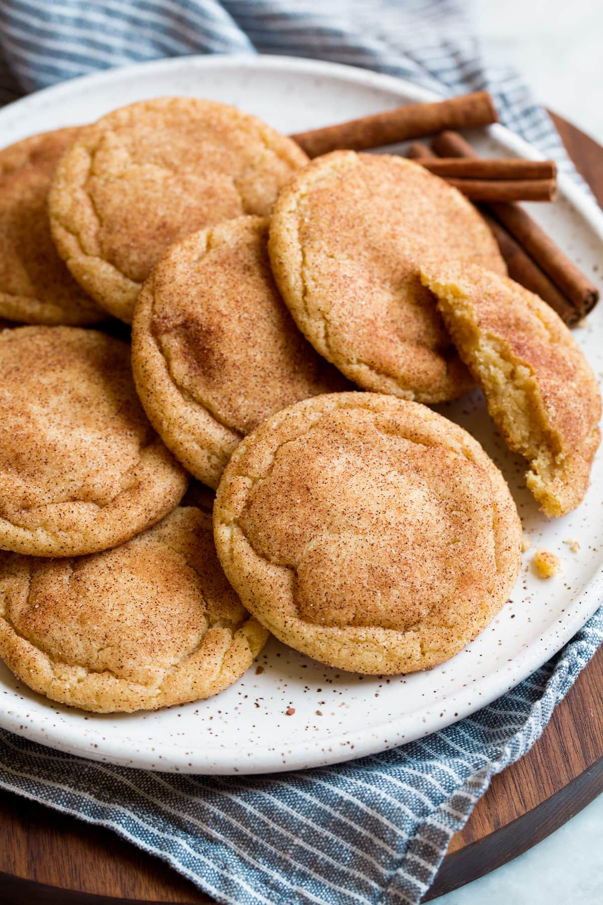

Snickerdoodles

How to make the most delicious snickerdoodles (EASY!)
This recipe for snickerdoodles is one that my mom passed down to me. They are extremely simple to make, require very few ingredients,
and come out soft and delicious every time. This is truly a cookie's cookie; it doesn't rely on anything extra like chocolate chips or candies to
really shine and is the pinnacle of what a cookie should be.
Ingredients
- 1 1/2 cups flour
- 1/2 tsp baking powder
- 1/2 tsp baking soda
- 1/2 tsp salt
- 1/2 cup + 2 tbsp sugar
- 1/2 cup brown sugar
- 1/2 cup butter
- 1 egg
- 1 tsp vanilla
- 2 tsp cinnamon
Steps:
- Preheat oven to 350 farenheit
- Cream butter, sugars (1/2 cup each), egg, and vanilla
- Add dry ingredients and mix well
- In a separate bowl, combine cinnamon and extra sugar
- Shape dough into balls and roll them around in your cinnamon/sugar mixture
- Flatten your dough balls slightly after setting them on your baking sheet
- Bake for 10 minutes